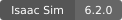
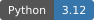

安装#


Isaac Lab 默认安装 Newton。 标准安装无需 Isaac Sim 即可运行；工作流有需要时，再添加 Isaac Sim 或其他可选后端。可以从自动 uv 配置开始，或选择下方的其他安装方式。
选择安装路径#
在 Isaac Lab 源码目录中使用 Newton，由 uv 管理环境。推荐大多数用户使用。
通过 uv sync 显式准备环境，可选择添加 Isaac Sim 支持。
将已发布的 Isaac Lab 软件包作为自己项目的依赖安装。
构建或修改 Isaac Sim 本身，适用于高级开发需求。
根据所需的物理与渲染组件构建或运行容器。
在受支持的云平台上创建远程 GPU 工作站。
系统要求#
Isaac Lab 默认安装 Newton，使用 NVIDIA Warp 进行仿真。以下要求针对默认的 Newton 与 PyTorch 训练环境，Isaac Sim 属于可选组件。
组件 |
要求 |
|---|---|
Python |
Python 3.12。自动 |
平台 |
x86_64 上的 Ubuntu 22.04+、Linux aarch64（包括 DGX Spark），或 x86_64 上的 Windows 11。 |
GPU 训练 |
所选 Newton 求解器与 PyTorch 支持的、具备 CUDA 能力的 NVIDIA GPU。默认的 CUDA 13 软件栈要求 Turing 或更新架构，计算能力至少为 7.5。 |
NVIDIA 驱动 |
Linux 至少为 |
内存 |
RAM 和显存需求取决于任务、并行环境数与相机工作负载。Isaac Sim 的工作站内存要求不适用于仅安装 Newton 的情况。 |
本版本使用 Warp 1.17，其预编译 wheel 包含所需 CUDA 组件，因此标准的 wheel 安装无需另装 CUDA Toolkit。平台与 GPU 要求见 Warp 安装 和 兼容性说明。
提示
默认环境还安装 使用 CUDA 13.0 的 PyTorch，因此驱动下限如上所述。仅使用 Warp 1.17 的 CUDA 12 wheel 可以运行在更旧的驱动上，但只满足 Warp 最低要求，不足以运行默认 GPU 训练环境。参阅 PyTorch CUDA 13.0 要求。
可选的 Isaac Sim 与渲染支持#
Isaac Sim： 安装
isaacsimextra，可使用 Isaac Sim 6.2 / PhysX 工作流。Linux wheel 要求 GLIBC 2.35+。x86_64 工作站应至少配备 32 GB RAM、16 GB 显存和受支持的 RTX GPU；训练与渲染可能需要更多资源。受支持 GPU、已测试驱动及 DGX Spark 支持情况，见 Isaac Sim 要求。不支持 Isaac Sim 5.1 及更早版本。渲染： 无界面的 Newton 仿真不要求 RTX 硬件。需要相机图像或交互视图时，还应满足所选 渲染器 或 可视化器 的要求。RTX 渲染有其自身的 GPU 与驱动要求。
Linux aarch64 和 DGX Spark 的要求
DGX Spark 需要 CUDA 13 或更高版本，以及对应的 PyTorch 构建版本。在安装 Isaac Lab 前，先安装构建所需的依赖：
sudo apt install python3.12-dev libgl1-mesa-dev libx11-dev libxcursor-dev \
libxi-dev libxinerama-dev libxrandr-dev
目前，SkillGen、XR 遥操作、直播流、Hub Workstation Cache、Cosmos Transfer1 和 RLinf 在 DGX Spark 上尚未得到支持或验证。SkillGen 依赖原生 CUDA/C++ 扩展，其工具链尚未在 DGX Spark 上验证；XR 则仍受限于尚未验证的编码性能。
使用 uv 自动安装（推荐）#
这是从 Isaac Lab 源码目录开始配置环境的最快方式。 uv 在每次调用时解析项目环境，因此无需手动创建或激活环境。
安装 uv ，克隆 Isaac Lab，然后启动工作流程：
curl -LsSf https://astral.sh/uv/install.sh | sh
git clone git@github.com:isaac-sim/IsaacLab.git --branch main
cd IsaacLab
git clone https://github.com/isaac-sim/IsaacLab.git --branch main
cd IsaacLab
# Newton backend without Isaac Sim
uv run isaaclab train --rl_library rsl_rl \
--task Isaac-Cartpole-Direct physics=newton_mjwarp
# OV PhysX backend
uv run --extra ovphysx isaaclab train --rl_library rsl_rl \
--task Isaac-Cartpole-Direct physics=ovphysx
# Full Isaac Sim support
uv run --extra isaacsim isaaclab train --rl_library rsl_rl \
--task Isaac-Cartpole-Direct physics=isaacsim_physx
# Play a policy
uv run isaaclab play --rl_library rsl_rl --task Isaac-Cartpole-Direct --viz newton_gl
curl -LsSf https://astral.sh/uv/install.sh | sh
git clone git@github.com:isaac-sim/IsaacLab.git --branch main
cd IsaacLab
git clone https://github.com/isaac-sim/IsaacLab.git --branch main
cd IsaacLab
# Newton backend
uv run isaaclab train --rl_library rsl_rl \
--task Isaac-Cartpole-Direct physics=newton_mjwarp
# OV PhysX backend
uv run --extra ovphysx isaaclab train --rl_library rsl_rl \
--task Isaac-Cartpole-Direct physics=ovphysx
# Full Isaac Sim support
uv run --extra isaacsim isaaclab train --rl_library rsl_rl \
--task Isaac-Cartpole-Direct physics=isaacsim_physx
# Play a policy
uv run isaaclab play --rl_library rsl_rl --task Isaac-Cartpole-Direct --viz newton_gl
备注
在 aarch64 上直接执行会导入 Isaac Sim 的 Python 命令时，请在命令前添加 LD_PRELOAD=/lib/aarch64-linux-gnu/libgomp.so.1 。
在 Windows 上克隆仓库前，请先启用长路径支持。在具有管理员权限的 PowerShell 窗口中运行：
New-ItemProperty -Path "HKLM:\SYSTEM\CurrentControlSet\Control\FileSystem" -Name LongPathsEnabled -Value 1 -PropertyType DWORD -Force
然后打开新的命令提示符窗口并运行：
powershell -ExecutionPolicy ByPass -c "irm https://astral.sh/uv/install.ps1 | iex"
git clone git@github.com:isaac-sim/IsaacLab.git --branch main
cd IsaacLab
git clone https://github.com/isaac-sim/IsaacLab.git --branch main
cd IsaacLab
:: Newton backend without Isaac Sim
uv run isaaclab train --rl_library rsl_rl ^
--task Isaac-Cartpole-Direct physics=newton_mjwarp
:: OV PhysX backend
uv run --extra ovphysx isaaclab train --rl_library rsl_rl ^
--task Isaac-Cartpole-Direct physics=ovphysx
:: Full Isaac Sim support
uv run --extra isaacsim isaaclab train --rl_library rsl_rl ^
--task Isaac-Cartpole-Direct physics=isaacsim_physx
:: Play a policy
uv run isaaclab play --rl_library rsl_rl --task Isaac-Cartpole-Direct --viz newton_gl
uv run 自动安装核心依赖。--extra <name> 将选定的可选集成加入该命令的运行环境，应放在 isaaclab 前，例如 --extra ov 同时安装 ovphysx 和 ovrtx 后端。可以传入逗号分隔的列表，或重复使用 --extra。各可选依赖组之间没有冲突，可以组合安装到同一环境。--extra all 安装经过筛选的 ov、rl-games、sb3、skrl、rsl-rl、rerun 和 viser 依赖组，不包含 Isaac Sim，也不包含 skrl-jax、rlinf、mimic、teleop、tetrahedralization、video、leapp 等专用依赖组；需要按名称明确指定：
uv run --extra all isaaclab train --rl_library rsl_rl \
--task Isaac-Cartpole-Direct physics=ovphysx
可用的可选依赖组见 可选依赖组 。
uv run --extra <name> <command> 会先将选定的可选依赖组同步到项目环境，再运行命令。
源码检出方式会在 Linux x86_64、Linux aarch64 和 Windows 上选择 PyTorch 的 CUDA 13.0 构建，无需额外命令参数。聚合 wheel 使用兼容软件包索引的元数据固定 PyTorch 版本；安装已发布 wheel 的命令会在安装时选择 CUDA 13.0 构建。该 wheel 支持 Python 3.12，与源码检出方式一致。
接下来阅读 快速入门，从运行第一个任务开始，了解可用命令、强化学习库、后端和可视化器。
显式管理 uv 环境#
若只需准备源码环境，不启动工作流，请运行：
uv sync --extra isaacsim
uv run --extra isaacsim python scripts/tutorials/00_sim/create_empty.py --viz kit
省略 --extra isaacsim，即为默认 Newton 环境。uv 下载所需 Python 版本并管理 .venv。如需其他目录，应在 uv sync 和 uv run 前都设置 UV_PROJECT_ENVIRONMENT。后续命令保持相同的 extra，以便 uv 保留所选集成。
对于需要从 PATH 查找 python 的工具，可以激活环境：
source .venv/bin/activate
Windows 命令提示符使用 .venv\Scripts\activate。
Isaac Lab Python 软件包#
如果将 Isaac Lab 作为外部 Python 项目的依赖，请选择这种方式。已发布的 isaaclab 软件包提供统一的 train 、 play 、 zero_agent 、 random_agent 、 benchmark 、 train_multigpu 、 demo 和 example 命令。下游项目可通过 isaaclab.tasks Python 软件包入口点组注册自己的任务包；模板生成器创建的项目会自动配置此入口点。
创建基于 Isaac Lab 的项目，请参阅 创建自己的项目或任务 。
备注
Isaac Lab wheel 随主要版本发布，并非每个补丁版本都会发布。
安装尚未发布的 Git 版本#
也可以直接从 Isaac Lab 的某个 Git 版本构建整合软件包。将 uv 指向 tools/wheel_builder 子目录，即可使用与已发布 wheel 相同的依赖元数据和打包运行时资源：
[project]
dependencies = ["isaaclab"]
[tool.uv.sources]
isaaclab = { git = "https://github.com/isaac-sim/IsaacLab.git", rev = "<git-revision>", subdirectory = "tools/wheel_builder" }
使用提交哈希或发布标签，以保证环境可复现。也可以使用分支名称，但更新锁文件时可能选用更新的 Isaac Lab 提交及依赖集合。
安装已发布的 wheel#
请从 NVIDIA 软件包索引安装 3.0.0rc1 预发布版本。安装已发布 wheel 时，不要再将 Isaac Lab 指向上一种工作流中的 Git 源码。
可以直接运行已发布的软件包，也可以将它安装到持久环境中。所有方式都从基础 isaaclab 软件包开始，只在项目需要时添加可选功能。
uvx --index https://pypi.nvidia.com \
--torch-backend cu130 \
--from "isaaclab==3.0.0rc1" \
isaaclab demo zoo
该命令从软件包索引解析已发布的 wheel，并在隔离环境中运行，无需检出源码、手动下载 wheel 或创建项目文件。
uv init --python 3.12 my_isaaclab_project
cd my_isaaclab_project
uv add \
--index-strategy unsafe-best-match \
--index pytorch-cu130=https://download.pytorch.org/whl/cu130 \
torch==2.11.0 torchvision==0.26.0
uv add \
--index-strategy unsafe-best-match \
--index nvidia=https://pypi.nvidia.com \
isaaclab==3.0.0rc1
uv venv --python 3.12 env_isaaclab
source env_isaaclab/bin/activate
uv pip install isaaclab==3.0.0rc1 \
--index https://pypi.nvidia.com \
--torch-backend cu130
uv venv --python 3.12 env_isaaclab
env_isaaclab\Scripts\activate
uv pip install isaaclab==3.0.0rc1 ^
--index https://pypi.nvidia.com ^
--torch-backend cu130
uv venv --python 3.12 env_isaaclab
source env_isaaclab/bin/activate
uv pip install isaaclab==3.0.0rc1 \
--index https://pypi.nvidia.com \
--torch-backend cu130
对于长期维护的应用，项目工作流会记录依赖、软件包索引和锁文件。下列命令会完成这些项目文件的修改，无需手动编辑。临时运行命令时可使用 uvx；探索性工作如果需要激活 Python 环境，则可使用独立环境。在项目中添加或升级依赖时，应传入相同的索引策略。
可选依赖组#
仅在项目需要时添加可选依赖组。大多数依赖组可以在独立环境中通过 uv pip install "isaaclab[<extra>]" 安装，也可以在 uv 项目中通过 uv add "isaaclab[<extra>]" 添加。 importers 和 isaacsim 依赖组应使用下方专门的命令。
可选依赖组 |
安装内容 |
|---|---|
|
从 pypi.nvidia.com 安装 Isaac Sim（ |
|
两个 OV 后端：OV PhysX 和 OV RTX。 |
|
仅 OV PhysX / 仅 OV RTX。 |
|
对应的强化学习框架。 |
|
使用支持 CUDA 的 JAX 的 skrl。 |
|
对应的可视化器。 |
|
Isaac Lab Mimic / XR 遥操作。wheel 的 |
|
网格四面体化 / 视频录制。 |
|
LEAP 模型导出支持。 |
|
在不使用 Isaac Sim 的情况下独立转换 URDF 和 MJCF。 |
|
预先选定的 |
|
开发测试与文档工具。 |
使用 all 可安装上述经过筛选的依赖组。Isaac Sim、独立导入器、专用依赖组（skrl-jax、rlinf、mimic、teleop、tetrahedralization、video、leapp），以及开发用的 test 工具仍需按需选择。
备注
已发布 wheel 的元数据不包含 RL-Games 和 Robomimic，因为 Isaac Lab 使用的版本从 Git 安装，未提供软件包索引中的 wheel。要使用这些集成，请从源码仓库安装 Isaac Lab，并选择对应的 rl-games 或 mimic 依赖组。
备注
在 Linux 上， mimic 依赖组可能需要从源码构建 egl-probe 。请先通过 sudo apt install cmake build-essential 安装 CMake 和 C++ 编译器。
安装 importers 可选依赖组#
安装此依赖组，即可在不使用 Isaac Sim 的情况下转换 URDF 和 MJCF 文件。
警告
请使用下方完整命令。如果不覆盖依赖版本，导入器依赖组可能降级基础 Isaac Lab 安装使用的软件包。覆盖设置会保留 Isaac Lab 已测试的版本。
uv pip install "isaaclab[importers]==3.0.0rc1" \
--overrides "https://raw.githubusercontent.com/isaac-sim/IsaacLab/v3.0.0-EA/tools/wheel_builder/uv-overrides.txt" \
--index https://pypi.nvidia.com \
--torch-backend cu130 \
--index-strategy unsafe-best-match
安装 isaacsim 可选依赖组#
Isaac Sim 6.2 固定的部分依赖与 Isaac Lab 冲突。安装 isaacsim 可选依赖时，请使用经过测试的覆盖配置：
uv pip install "isaaclab[isaacsim]==3.0.0rc1" \
--overrides "https://raw.githubusercontent.com/isaac-sim/IsaacLab/v3.0.0-EA/tools/wheel_builder/uv-overrides.txt" \
--extra-index-url https://pypi.nvidia.com \
--torch-backend cu130 \
--index-strategy unsafe-best-match
需要时可在方括号中添加其他依赖组。例如，使用 isaaclab[isaacsim,all] 同时安装预先选定的 all 依赖组。
安装支持 CUDA 的 PyTorch#
上面的已发布 wheel 安装命令会在依赖解析时选择 CUDA 13.0 版 PyTorch。如果现有独立环境安装时未使用 CUDA 索引，可运行对应平台的命令进行更新：
uv pip install -U torch==2.11.0 torchvision==0.26.0 --index-url https://download.pytorch.org/whl/cu130
uv pip install -U torch==2.11.0 torchvision==0.26.0 --index-url https://download.pytorch.org/whl/cu130
备注
在安装 Isaac Lab 前，先安装所需的 Python、OpenGL 和 X11 开发软件包：
sudo apt install python3.12-dev libgl1-mesa-dev libx11-dev libxcursor-dev libxi-dev \
libxinerama-dev libxrandr-dev
uv pip install -U torch==2.11.0 torchvision==0.26.0 --index-url https://download.pytorch.org/whl/cu130
备注
如果 Isaac Sim 报告 OpenMP 预加载警告，请使用系统 GNU OpenMP 库：
unset LD_PRELOAD
export LD_PRELOAD=/lib/aarch64-linux-gnu/libgomp.so.1
备注
如果导入 omni.client 或 torch 时，因 libcarb.so 无法分配静态 TLS 块而失败，请在启动 Python 前预加载 libcarb.so ：
export LD_PRELOAD=$(python -c "import sys,os;[print(os.path.join(p,'omni','client','libcarb.so')) for p in sys.path if os.path.isfile(os.path.join(p,'omni','client','libcarb.so'))]" 2>/dev/null | head -1)${LD_PRELOAD:+:$LD_PRELOAD}
如果安装了 isaacsim 依赖组，请在运行项目之前先验证它：
isaacsim
首次启动会下载 Isaac Sim 扩展，可能耗时十分钟以上，同时会要求接受 NVIDIA Omniverse EULA；非交互式环境可设置 OMNI_KIT_ACCEPT_EULA=yes 。使用 python my_script.py 运行项目脚本。
通过以下命令，为当前工作区生成 VS Code 或 Cursor 设置：
uv run isaaclab --editor
警告
此命令在工作区中生成 .vscode/settings.json 和 pyrightconfig.json 。Pyright 配置会继承已有的 [tool.pyright] 配置表，并添加从当前 Python 环境中发现的路径。
从源码构建 Isaac Sim#
仅在需要修改 Isaac Sim 或测试每日构建版本时，才从源码构建 Isaac Sim。Linux 上的构建要求 Ubuntu 22.04 或更高版本，驱动要求见 技术要求 。Windows 上构建前，请启用 长路径支持 。
在 Isaac Lab 仓库旁边克隆 Isaac Sim，然后从 Isaac Lab 根目录运行源码构建命令。该命令会增量构建 Isaac Sim，并将当前发布目录链接为 _isaac_sim ：
git clone https://github.com/isaac-sim/IsaacSim.git ../IsaacSim
uv run isaaclab --isaacsim_source ../IsaacSim
Isaac Lab 通过 Isaac Sim 生成的 Python 启动器运行当前 uv 环境，直接从源码构建中加载 Kit 和扩展，无需创建 wheel，也不修改 pyproject.toml 和 uv.lock 。通过以下命令，使用源码构建版本运行 Isaac Lab：
uv run isaaclab train --rl_library rsl_rl --task Isaac-Cartpole-Direct physics=isaacsim_physx
修改 Isaac Sim 源码后，再次运行相同的 --isaacsim_source 命令即可。原生构建是增量进行的，现有链接会立即指向更新后的构建，无需打包 wheel 或重新解析依赖。
Docker 容器#
Docker 将 Isaac Lab 及其依赖打包为可复用环境。 docker/container.py 是在容器中运行 Isaac Lab 的主要入口。它封装 docker compose ，无需记住哪些 Dockerfile、环境文件和卷挂载应搭配使用；只需指定一种 配置，脚本会组装其余内容。
构建的镜像也是其他工作流的基础： 在 HPC 集群上运行 将其转换为 Apptainer 镜像， 云部署 配置运行它的机器。
运行以下容器命令前，请先克隆 Isaac Lab：
git clone git@github.com:isaac-sim/IsaacLab.git --branch main
cd IsaacLab
git clone https://github.com/isaac-sim/IsaacLab.git --branch main
cd IsaacLab
小心
标准 Isaac Lab 容器依赖 Isaac Sim Docker 镜像。运行该容器即表示默认同意 NVIDIA 软件许可协议 。如果不同意 EULA，请勿运行。 kitless 镜像不包含 Isaac Sim 或 Kit。
前置条件#
安装 Docker Engine 、 Docker Compose 和 NVIDIA Container Toolkit 。容器已使用 Docker Engine 26.0.0 和 Docker Compose 2.25.0 测试，请使用这些或更新版本。完成 安装后步骤 ，使 Docker 无需 sudo 即可运行。
Isaac Sim 的 容器安装 文档更详细地介绍了同样的前置要求，包括如何获得 Isaac Sim 镜像访问权限。
备注
由于对 snap 的限制，请确保 Isaac Lab 目录位于 /home 目录树下使用 docker 时。
容器配置#
这里的配置是 Docker Compose profile ： docker-compose.yaml 为每个服务标记一种 profile，Compose 只启动已启用 profile 对应的服务。因此，指定配置名会选择配套的一组内容：一个服务、一个 Dockerfile、一组环境文件和一个镜像名。
区域配置 |
Compose 服务 |
Dockerfile |
环境文件 |
基础镜像 |
|---|---|---|---|---|
|
|
|
|
Isaac Sim 镜像 |
|
|
|
|
独立镜像，不依赖 Isaac Sim |
下文各命令的第一个位置参数是配置名，默认为 base 。一次只应用一种配置，生成镜像与容器均名为 isaac-lab-<profile> 。如果希望并行保留同一配置的多个变体，传入 --suffix 添加名称后缀。集群部署的导出命令要求无后缀镜像名，因此不要使用 --suffix 。
各镜像的实际内容及选择方式见 容器镜像 。
启动、运行与取回结果#
在宿主机仓库根目录构建并启动默认 base 容器，再打开其中的 shell。要使用其他镜像，追加配置名：
./docker/container.py start
./docker/container.py enter
在容器中，不使用可视化器运行日志示例：
uv run isaaclab -p scripts/tutorials/00_sim/log_time.py
脚本将每步仿真时间写入 /workspace/isaaclab/logs/docker_tutorial/log.txt 。按 Ctrl+C 停止脚本，输入 exit 返回宿主机 shell。停止容器前取回结果：
./docker/container.py copy
./docker/container.py stop
日志现在保存在主机的 docker/artifacts/logs/docker_tutorial/log.txt。stop 删除容器，但保留其命名卷，包括日志和缓存；旧版每次停止都会删除卷。显式传入 --remove-volumes 才会删除卷，这是项目范围的清理操作，要求所选容器仍存在，且其他项目容器均已移除，包括已停止的容器。请先复制结果，并在不清理卷的情况下移除其他容器，已停止容器使用 docker rm <name>。从 root 所有的卷迁移的一次性步骤见 容器镜像。镜像仍会保留，停止后可通过 docker image rm isaac-lab-base 删除，下次 start 会重新构建。其他清理方式见 Docker 清理。
log_time.py 的代码
1# Copyright (c) 2022-2026, The Isaac Lab Project Developers (https://github.com/isaac-sim/IsaacLab/blob/main/CONTRIBUTORS.md).
2# All rights reserved.
3#
4# SPDX-License-Identifier: BSD-3-Clause
5
6"""
7This script demonstrates how to generate log outputs while the simulation plays.
8It accompanies the tutorial on docker usage.
9
10.. code-block:: bash
11
12 # Usage
13 uv run python scripts/tutorials/00_sim/log_time.py
14
15"""
16
17"""Parse the command-line arguments first."""
18
19
20import argparse
21import os
22
23from isaaclab.app import add_launcher_args, launch_simulation
24
25# create argparser
26parser = argparse.ArgumentParser(description="Tutorial on creating logs from within the docker container.")
27# append simulation launcher cli args
28add_launcher_args(parser)
29# parse the arguments
30args_cli = parser.parse_args()
31
32"""Rest everything follows."""
33
34from isaaclab.sim import SimulationCfg, SimulationContext
35
36
37def main():
38 """Main function."""
39 # Specify that the logs must be in logs/docker_tutorial
40 log_dir_path = os.path.join("logs")
41 if not os.path.isdir(log_dir_path):
42 os.mkdir(log_dir_path)
43 # In the container, the absolute path will be
44 # /workspace/isaaclab/logs/docker_tutorial, because
45 # all Python execution is done through the uv-managed workspace
46 # and the calling process' path will be /workspace/isaaclab
47 log_dir_path = os.path.abspath(os.path.join(log_dir_path, "docker_tutorial"))
48 if not os.path.isdir(log_dir_path):
49 os.mkdir(log_dir_path)
50 print(f"[INFO] Logging experiment to directory: {log_dir_path}")
51
52 # Configure the simulation
53 sim_cfg = SimulationCfg(dt=0.01, device=args_cli.device)
54 # Launch the simulator runtime that the configuration needs
55 with launch_simulation(sim_cfg, args_cli):
56 # Initialize the simulation context
57 sim = SimulationContext(sim_cfg)
58 # Set main camera
59 sim.set_camera_view([2.5, 2.5, 2.5], [0.0, 0.0, 0.0])
60
61 # Play the simulator
62 sim.reset()
63 # Now we are ready!
64 print("[INFO]: Setup complete...")
65
66 # Prepare to count sim_time
67 sim_dt = sim.get_physics_dt()
68 sim_time = 0.0
69
70 # Open logging file
71 with open(os.path.join(log_dir_path, "log.txt"), "w") as log_file:
72 # Simulate physics
73 while sim.is_running():
74 log_file.write(f"{sim_time}" + "\n")
75 # perform step
76 sim.step()
77 sim_time += sim_dt
78
79
80if __name__ == "__main__":
81 # run the main function
82 main()
备注
镜像在构建时将仓库复制到 /workspace/isaaclab，构建后的修改不会自动纳入。为加快开发迭代，Compose 文件将主机的 source、scripts、apps、docs 和 tools 绑定挂载到容器，因此这些目录的变更立即可见，其他内容仍需重新构建。
container.py 命令参考#
运行 ./docker/container.py --help 列出命令，运行 ./docker/container.py <command> --help 查看对应参数。
命令 |
描述 |
|---|---|
|
构建镜像但不创建容器。使用 |
|
构建镜像，并在后台启动容器。 |
|
在运行中的容器内打开 Bash shell。 |
|
打印合并后的 Compose 配置；使用 |
|
将日志、数据和构建的文档复制到宿主机 |
|
停止并删除容器，保留缓存、日志和数据。使用 |
各命令均接受以下参数：
参数 |
描述 |
|---|---|
|
可选的配置名，默认为 |
|
按给定顺序，在 |
|
按给定顺序，在配置默认值之后合并额外环境文件。 |
|
向镜像与容器名称追加 |
|
打印解析后的容器接口配置，不执行命令。 |
|
显示帮助并退出。 |
扩展 Compose 配置#
--files 和 --env-files 将额外 Compose 文件和环境文件合并到生成配置，无需编辑版本控制中的文件，即可叠加可选组件。向 XR 设备串流的示例会在 base 旁添加 CloudXR Runtime 服务：
./docker/container.py start --files docker-compose.cloudxr-runtime.patch.yaml --env-files .env.cloudxr-runtime
停止时使用同样参数。遥操作设置、防火墙规则和客户端连接步骤见 配置 Isaac Capture 与 CloudXR 。组合行为不符合预期时，用 ./docker/container.py config 打印合并结果。
运行之间保留的内容#
Compose 文件为 Isaac Sim 缓存、日志及用户数据声明命名卷，执行 container.py stop 后仍可使用。显式执行 container.py stop --remove-volumes 会在项目范围内删除这些卷。清理前请运行 container.py copy，将结果保存到主机。
container.py copy 将最常需要的三个卷——logs 、 data_storage 和 docs/_build——提取到宿主机 docker/artifacts 。其他内容使用 docker cp ，例如 docker cp isaac-lab-base:/workspace/isaaclab/logs . 。
若卷继承自以 root 运行的镜像，复用前请先按 容器镜像 执行一次性清理与所有权迁移。
全部命名卷及其容器路径
卷名 |
描述 |
容器路径 |
|---|---|---|
isaac-cache-kit |
存储缓存的 Kit 资源 |
/isaac-sim/kit/cache |
isaac-data-kit |
存储 Kit 数据 |
/isaac-sim/kit/data |
isaac-cache-ov |
存储缓存的 OV 资源 |
/root/.cache/ov |
isaac-cache-pip |
存储缓存的 pip 资源 |
/root/.cache/pip |
isaac-cache-gl |
存储缓存的 GLCache 资源 |
/root/.cache/nvidia/GLCache |
isaac-cache-compute |
存储缓存的计算资源 |
/root/.nv/ComputeCache |
isaac-cache-uv |
存储 kitless 配置的 uv 下载缓存 |
/home/isaaclab/.cache/uv |
isaac-cache-warp |
存储 kitless 配置的 Warp 核函数缓存 |
/home/isaaclab/.cache/warp |
isaac-logs |
存储由 Omniverse 生成的日志 |
/root/.nvidia-omniverse/logs |
isaac-carb-logs |
存储由 carb 生成的日志 |
/isaac-sim/kit/logs/Kit/Isaac-Sim |
isaac-data |
存储由 Omniverse 生成的数据 |
/root/.local/share/ov/data |
isaac-docs |
存储由 Omniverse 生成的文档 |
/root/Documents |
isaac-lab-docs |
存储 Isaac Lab 的文档，当在容器内构建时 |
/workspace/isaaclab/docs/_build |
isaac-lab-logs |
存储由 Isaac Lab 工作流生成的日志，当它们在容器内运行时 |
/workspace/isaaclab/logs |
isaac-lab-data |
存储用户可能希望在容器运行之间保留的所有数据 |
/workspace/isaaclab/data_storage |
在宿主机运行 docker volume ls ，查找带有 Compose 项目前缀的实际名称，再用 docker volume inspect <volume-name> 查看。 kitless 配置使用 uv 和 Warp 缓存，并与其他配置共享文档、日志和数据卷。
通过 X11 转发显示#
X11 转发使容器内启动的图形应用显示在宿主机上。首次 start 会询问是否启用，并将答案记录在 docker/.container.cfg 。以后如需修改，将该文件的 X11_FORWARDING_ENABLED 设为 0 或 1 ，再运行 start ；修改在重新构建时生效。
容器镜像#
每种 配置 构建不同镜像。它们所包含的仿真与渲染栈不同，决定镜像大小及可运行内容。本页介绍镜像本身；构建或运行时，在 容器生命周期 中指定其配置名称。
选择镜像#
区域配置 |
包含内容 |
适用情况 |
|---|---|---|
|
基于 NVIDIA Isaac Sim 镜像的 Isaac Lab，包含 Kit 和 RTX 渲染 |
需要默认环境、图形界面渲染，或任何依赖 Isaac Sim 的功能 |
|
Ubuntu 24.04、Python 3.12、Newton 和 OVPhysX 物理、OVRTX 渲染，以及四种强化学习库 |
使用 Newton 训练，希望镜像尽量小；也是唯一没有 Isaac Sim EULA 的镜像 |
构建镜像#
所有镜像使用相同的构建命令，只需更改配置名称。在仓库根目录，选择上表中的配置构建镜像，例如 kitless：
./docker/container.py build kitless
./docker/container.py start kitless 也会在启动容器前构建镜像。不使用 Compose 时，可以直接构建对应配置的 Dockerfile，其默认路径相同：
docker build --pull --file docker/Dockerfile.kitless --tag isaac-lab-kitless .
发布版本也提供预构建镜像，可以直接使用，无需自行构建，见 NGC 预构建镜像 。
基础镜像#
Dockerfile.base 在 Isaac Sim 容器上添加 Isaac Lab 依赖，因此继承 Kit、RTX 渲染和 Isaac Sim 资产管线。构建所用 Isaac Sim 版本由 .env.base 中的 ISAACSIM_VERSION 指定；该文件的其他变量控制容器内路径。
依赖通过 uv.lock 冻结解析后安装。拉取仓库变更后，如需更新开发容器，请重新构建并重建服务：
./docker/container.py stop base
./docker/container.py build base --pull
./docker/container.py start base
现在停止容器会保留命名卷，旧版则每次都删除。Compose 缓存、日志和数据使用命名卷，其已有所有权不会因重新构建而改变。从 root 运行的镜像升级时，应先复制所需结果，在不使用 --remove-volumes 的情况下停止其他配置，已停止容器使用 docker rm <name>；再在重新构建和启动 base 前，执行一次 ./docker/container.py stop base --remove-volumes。这会删除项目的缓存、日志和数据，使新卷继承 uid/gid 1000 的所有权。清理要求所选容器仍存在，且 Compose 项目中没有其他容器。
若所选容器已删除，需先重新启动它，再请求清理。对于自定义的主机绑定挂载缓存，应直接在主机上将所有权修正为 uid/gid 1000。
启用 X11 转发后，从安装目录启动独立 Isaac Sim GUI：
cd /isaac-sim
./runapp.sh
镜像将共用 Python 包，包括直接的 omni.warp.core 包，重定向到锁定环境。缺少 packaging/__init__.py 或 warp/_src/apic/__init__.py 表示共享包文件损坏，使用新构建镜像重建容器可恢复包目录。若安装器报告 NVIDIA 整个命名空间的符号链接错误，也需先恢复干净的 Isaac Sim 安装或重建镜像，再重试；仅删除链接无法恢复 Kit 的 CUDA 12 库。缓存权限错误则需执行上方的命名卷迁移，或修正自定义主机绑定挂载的所有权。
不依赖 Kit 的镜像#
不依赖 Kit 的镜像完全移除了 Isaac Sim，基于 Ubuntu 24.04 和 Python 3.12，包含 Newton 物理、OVPhysX 物理、OVRTX 渲染，以及 RL Games、RSL-RL、Stable-Baselines3、SKRL 四个核心强化学习框架。镜像内置 newton_gl、newton_rtx、viser 和 rerun 可视化器。容器能够访问显示器时，可用 --viz newton_gl 进行本地可视化。--viz newton_gl 选择 OpenGL 光栅化器，--viz newton_rtx 选择 OVRTX 路径追踪器，两者都可在没有 Isaac Sim 的情况下离屏渲染。直接使用 docker run 时，要打开它们的窗口，需在宿主机运行 xhost +local:，并在下方命令中添加 -e DISPLAY 和 -v /tmp/.X11-unix:/tmp/.X11-unix:rw。已弃用的 --viz newton 别名选择 GL，不会自动在 GL 与 RTX 之间切换。
除计算能力外，渲染还需要 NVIDIA 图形驱动能力。直接使用 docker run 时，传入 --gpus all -e NVIDIA_DRIVER_CAPABILITIES=all 。NVIDIA Container Toolkit 会提供宿主机驱动，不要再挂载一份 Vulkan ICD。如果发现多个驱动，通过 VK_DRIVER_FILES 选择容器内可用的 NVIDIA ICD，例如 /etc/vulkan/icd.d/nvidia_icd.json 。
默认不选择可视化器，因此除非显式请求，训练以无界面模式运行。 kit 可视化器不可用，因为它来自本镜像未包含的 Omniverse Kit。
与基础镜像不同，它在 source、scripts、tools 和 docs 之外，还绑定挂载 apps，并使用独立的 uv 和 Warp 缓存。
无需在本地构建。它随每个 Isaac Lab 版本发布在同一镜像仓库，用 -kitless 标签后缀区分：
docker pull nvcr.io/nvidia/isaac-lab:3.0.0-rc1-kitless
脱离 Compose 工作流程直接运行镜像，便于验证镜像和 NVIDIA Container Toolkit 配置。--interactive 和 --tty 会保持容器 shell 运行，以便多条命令共用同一个容器。isaac-lab-kitless-logs 命名卷可在容器删除后保留检查点：
docker run --name isaac-lab-kitless --detach --interactive --tty --gpus all --network host \
-e NVIDIA_DRIVER_CAPABILITIES=all \
-v isaac-lab-kitless-logs:/workspace/isaaclab/logs \
nvcr.io/nvidia/isaac-lab:3.0.0-rc1-kitless
docker exec isaac-lab-kitless \
isaaclab train --rl_library rsl_rl --task Isaac-Cartpole-Direct \
--num_envs 16 presets=newton_mjwarp --max_iterations 5
通过以下命令在浏览器中回放：
docker exec --interactive --tty isaac-lab-kitless \
isaaclab play --rl_library rsl_rl --task Isaac-Cartpole-Direct \
--num_envs 16 presets=newton_mjwarp --checkpoint latest --viz viser
Viser 可通过宿主机网络访问，无需转发桌面显示。按 Ctrl+C 可停止回放而不停止容器。用 docker cp isaac-lab-kitless:/workspace/isaaclab/logs ./logs 将日志复制到宿主机。
选择宿主机前，使用 docker buildx imagetools inspect <image:tag> 检查该标签发布了哪些架构的镜像。
NGC 预构建镜像#
精简的预构建容器包含少量 Isaac Sim 和 Omniverse 依赖，并已在 /workspace/isaaclab 中内置 Isaac Lab。以下示例无需转发桌面显示。根据所需物理与渲染栈选择镜像配置，渲染时另行配置图形访问。
备注
使用明确的已发布版本标签，以便复现运行。下例使用 3.0.0-rc1 ，对应的不依赖 Kit 的镜像标签为 3.0.0-rc1-kitless 。
注意
从 3.0.0-beta2 开始，镜像以 非 root 用户运行，因此绑定挂载目录必须允许 uid/gid 1000 写入。Docker 会以 root 创建不存在的目录，运行时用户无法写入，可能出现 PermissionError: [Errno 13] Permission denied: '/root/.local/share/ov/data/exts' 等错误。应先创建目录：
mkdir -p ~/docker/isaac-sim/{cache/kit,cache/ov,cache/pip,cache/glcache,cache/computecache,logs,data,documents}
sudo chown -R 1000:1000 ~/docker/isaac-sim
由于在 Compose 之外运行，需手动挂载 Isaac Sim 缓存目录，否则每次启动都重新编译着色器：
docker run --name isaac-lab --entrypoint bash -it --gpus all -e "ACCEPT_EULA=Y" --rm --network=host \
-e "PRIVACY_CONSENT=Y" \
-v ~/docker/isaac-sim/cache/kit:/isaac-sim/kit/cache:rw \
-v ~/docker/isaac-sim/cache/ov:/root/.cache/ov:rw \
-v ~/docker/isaac-sim/cache/pip:/root/.cache/pip:rw \
-v ~/docker/isaac-sim/cache/glcache:/root/.cache/nvidia/GLCache:rw \
-v ~/docker/isaac-sim/cache/computecache:/root/.nv/ComputeCache:rw \
-v ~/docker/isaac-sim/logs:/root/.nvidia-omniverse/logs:rw \
-v ~/docker/isaac-sim/data:/root/.local/share/ov/data:rw \
-v ~/docker/isaac-sim/documents:/root/Documents:rw \
nvcr.io/nvidia/isaac-lab:3.0.0-rc1
上面的命令不会打开窗口：没有显示器时，--viz kit、--viz newton_gl 和 --viz newton_rtx 均以无界面方式运行。viser 和 rerun 则提供网页，无需显示器。要通过 X11 转发启用窗口显示，请允许本地客户端使用宿主机 X 服务器，并将显示配置传入容器：
xhost +local:
docker run --name isaac-lab --entrypoint bash -it --gpus all -e "ACCEPT_EULA=Y" --rm --network=host \
-e "PRIVACY_CONSENT=Y" \
-e DISPLAY \
-e MUJOCO_GL=disable \
-v /tmp/.X11-unix:/tmp/.X11-unix:rw \
-v ~/docker/isaac-sim/cache/kit:/isaac-sim/kit/cache:rw \
-v ~/docker/isaac-sim/cache/ov:/root/.cache/ov:rw \
-v ~/docker/isaac-sim/cache/pip:/root/.cache/pip:rw \
-v ~/docker/isaac-sim/cache/glcache:/root/.cache/nvidia/GLCache:rw \
-v ~/docker/isaac-sim/cache/computecache:/root/.nv/ComputeCache:rw \
-v ~/docker/isaac-sim/logs:/root/.nvidia-omniverse/logs:rw \
-v ~/docker/isaac-sim/data:/root/.local/share/ov/data:rw \
-v ~/docker/isaac-sim/documents:/root/Documents:rw \
nvcr.io/nvidia/isaac-lab:3.0.0-rc1
xhost +local: 允许所有本地客户端使用显示器，范围并不只限于容器；用完后请在宿主机运行 xhost -local: 撤销权限。较早发布的镜像尚未在镜像内设置 MUJOCO_GL=disable，Newton 查看器需要显式添加该变量；这些旧镜像继承的 MUJOCO_GL=egl 会使窗口查看器报 Attempt to retrieve context when no valid context。Compose 工作流会自动设置 X11 转发，见 Docker 容器 。GL 和 RTX 的图形驱动要求见上文。
运行时用户#
基础、cuRobo 和无 Kit 镜像均以 uid/gid 1000 的非 root 用户运行。直接使用 docker run 时，应保留此默认用户，不传入 --user，以便运行时主目录与缓存目录保持可写。命名卷继承镜像所有权；主机绑定挂载可用 sudo chown -R 1000:1000 <directory> 调整为可写。
Python 解释器#
所有镜像均从 uv.lock 安装依赖，使用位于 /opt/isaaclab-venv 的 Python 3.12 虚拟环境。基于 Isaac Sim 的镜像使用 Isaac Sim 自带解释器创建环境，Isaac Sim 本体保留在环境外，通过 _isaac_sim 符号链接访问；uv run isaaclab 将其加入路径。无论哪种镜像，容器 PATH 上的 python 都指向正确解释器，因此脚本运行方式相同。
云端工作站#
Isaac Automator 可在 AWS、GCP、Azure 和阿里云上创建 GPU 工作站。先安装 Docker，再克隆并构建 Isaac Automator：
git clone https://github.com/isaac-sim/IsaacAutomator.git
cd IsaacAutomator
./build
./run ./deploy-aws
根据云平台，将 deploy-aws 替换为 deploy-gcp 、 deploy-azure 或 deploy-alicloud 。通过 --isaaclab 和 --isaacsim 选择 Git 版本。SSH、noVNC 和 NoMachine 的连接信息保存在 state/<deployment-name>/info.txt 中。
在 Automator 容器中管理工作站：
./stop <deployment-name>
./start <deployment-name>
./upload <deployment-name>
./download <deployment-name>
./destroy <deployment-name>
请保留 state 目录，其中包含部署元数据。
凭据、云平台选项、连接方式、数据传输及完整的工作站生命周期说明见 云部署 。
后续步骤#
继续阅读 快速入门，运行任务并训练策略。资产缓存、Nucleus 迁移和区域资产服务见 管理资产下载；安装、启动及性能问题见 故障排查参考。